目前port总结
9090：调度中心
9999：执行器1
8088：客户端1
9998：执行器2
8089：客户端2
创建应用副本是为了搭建一个集群的环境：
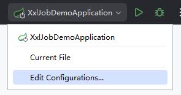
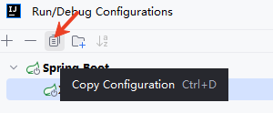
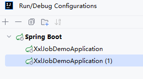
配置第一个应用的服务器端口8088和执行器端口9998：
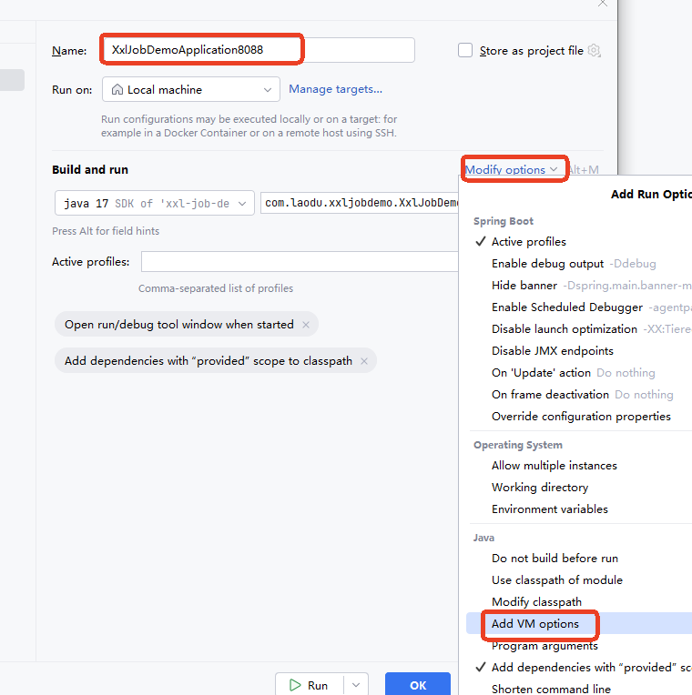
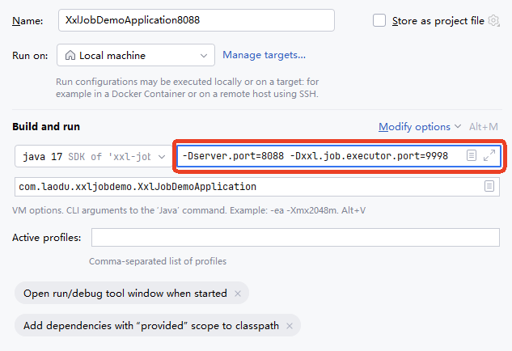
-Dserver.port=8088 -Dxxl.job.executor.port=9998
配置第二个应用的服务器端口8089和执行器端口9999：
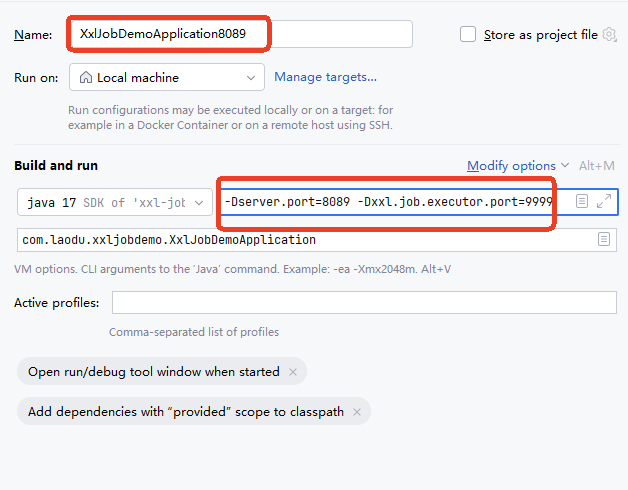
-Dserver.port=8089 -Dxxl.job.executor.port=9999
启动两个应用：
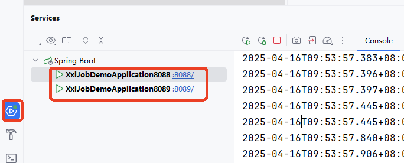
在调度中心启动任务，查看这两个应用有没有重复执行任务。
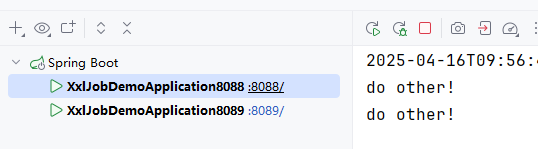
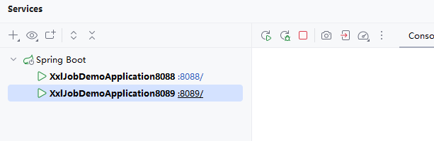
可以看到，任务只在第一个应用中执行，并不会重复执行任务。
为什么只会在第一个应用中执行呢？
这是由路由策略所决定的。如下图，在调度中心的任务编辑页面可以看到路由策略的选择，默认选择的是第一个:
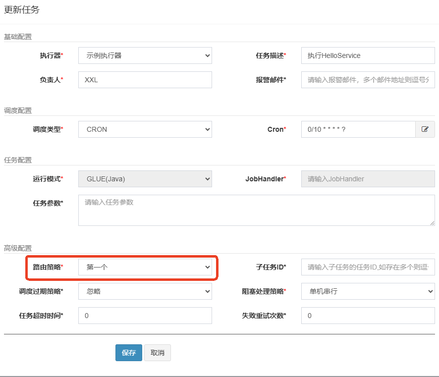
所有的路由策略包括：
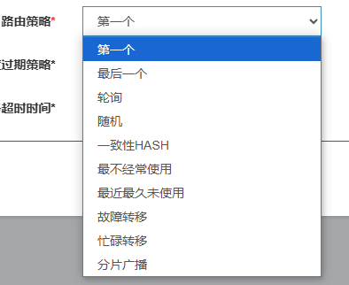
每个路由策略什么含义？
尝试将路由策略修改为轮询，看看是否两个应用交替执行任务：
停止任务：
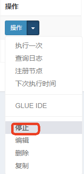
编辑任务：
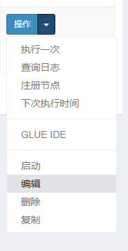
路由策略选择轮询：
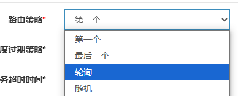
启动任务：
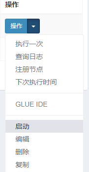
查看控制台：
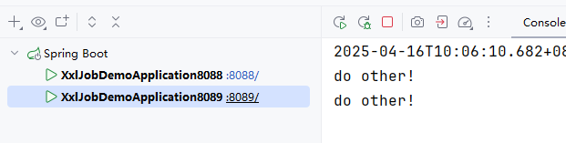
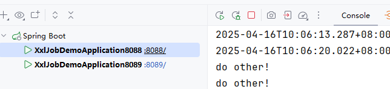
可以看到，确实采用轮询的方式交替执行任务。